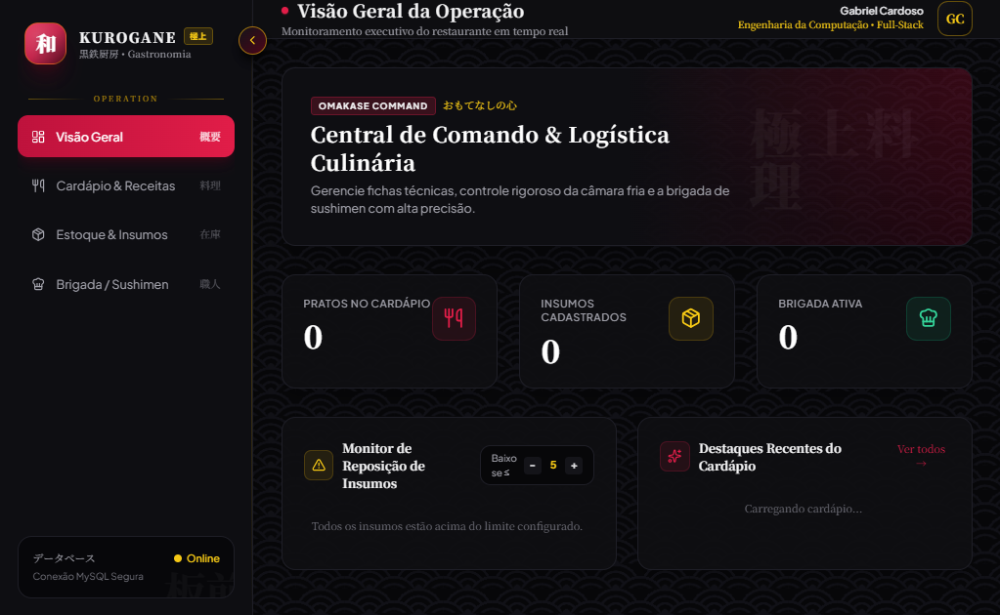

Sistema de Controle de Estoque para Restaurante (Cozinha Japonesa)
Aplicação web desenvolvida de ponta a ponta para atuar como o cérebro operacional de uma cozinha profissional. O sistema integra fichas técnicas (receitas) diretamente ao inventário de insumos, garantindo baixa automática de estoque, rastreabilidade de preparo e eliminação de gargalos logísticos.
01 Contexto do Desafio & Solução Aplicada
Em restaurantes de culinária japonesa, o controle rigoroso de ingredientes frescos de alto custo (como salmão, atum e insumos específicos) é crítico para a margem financeira. Sem um sistema integrado, a cozinha opera no escuro até que um item acabe no meio do expediente.
- Desperdício e Ruptura de Estoque: Falta de visibilidade sobre o consumo real de ingredientes a cada prato vendido.
- Dados Fragmentados: Fichas técnicas isoladas do inventário, exigindo cálculos manuais propensos a erro humano.
- Falta de Rastreabilidade: Impossibilidade de auditar quem preparou cada lote ou prato durante os turnos de serviço.
- Baixa Transacional Inteligente: O registro de preparo de um prato consulta sua ficha técnica e abate automaticamente os insumos no MySQL.
- Banco Relacional Normalizado: Integridade referencial estrita entre pratos, receitas, ingredientes e equipe.
- Auditoria de Produção: Histórico completo vinculando cozinheiros, horários e pratos produzidos para controle gerencial.
02 Sistema em Ação: Fluxo Operacional Completo
A gravação abaixo demonstra o sistema operando de ponta a ponta: navegação entre módulos, consulta de cardápio, gerenciamento de ingredientes, cadastro de registros e atualização dinâmica da interface em comunicação direta com a API em Node.js.
[ Fluxo Full-Stack: Requisições assíncronas, validação de dados e sincronização em tempo real com MySQL ]
03 Interface Atualizada: Painel de Controle Operacional
A interface passou por um refinamento visual e estrutural para oferecer clareza imediata à equipe da cozinha e aos gestores. O painel exibe de forma organizada os pratos disponíveis, os níveis críticos de estoque e os controles rápidos de operação.

[ Dashboard operacional atualizado com foco em usabilidade, leitura rápida e resposta síncrona ]
04 Planta Baixa dos Dados: Modelagem Relacional (DER / MER)
Antes de codificar o back-end, toda a estrutura de dados foi projetada através de diagramas de Entidade-Relacionamento. Essa modelagem evita redundância de informações e garante integridade através de chaves primárias (PK) e estrangeiras (FK).

[ Arquitetura relacional interligando Pratos, Cozinheiros, Ingredientes, Receitas e Histórico de Preparo ]
05 Pilares Técnicos da Implementação
Entidades & Normalização
Separação clara entre catálogos base (Pratos e Ingredientes), entidades associativas (Receitas que definem a gramatura exata por prato) e tabelas transacionais (Preparo).
API RESTful em Node.js
Servidor estruturado com Express e rotas organizadas por responsabilidade (CRUD completo), validando entradas antes de executar instruções SQL no banco de dados.
Integridade & Consultas SQL
Uso de consultas relacionais com JOIN para cruzar dados de produção com os níveis de estoque atuais, garantindo precisão nos relatórios de consumo diário.